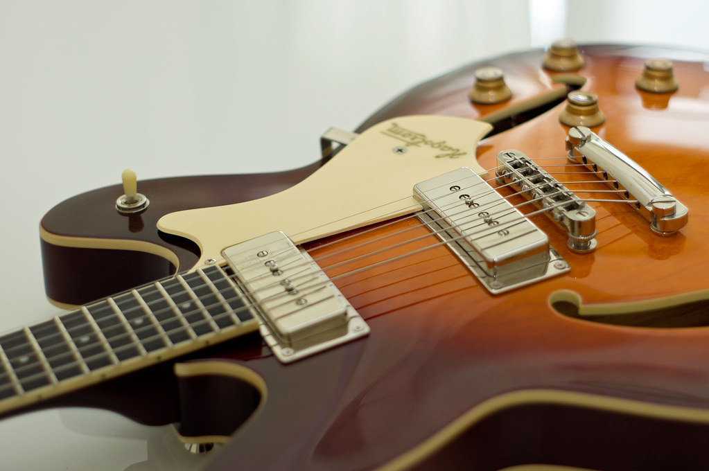

Arreglo e interpretación de Desafinado de A.C. Jobim con letra de Newton Mendonça,
(basada en versiones en vivo de Joao Gilberto para voz y guitarra)
Otros instrumentos y géneros

Guitarra
Guitarra criolla, clásica y eléctrica.

Piano
Pandeiro

Otros Géneros
Bossa Nova. Tango. Funk. Soul. Trap.